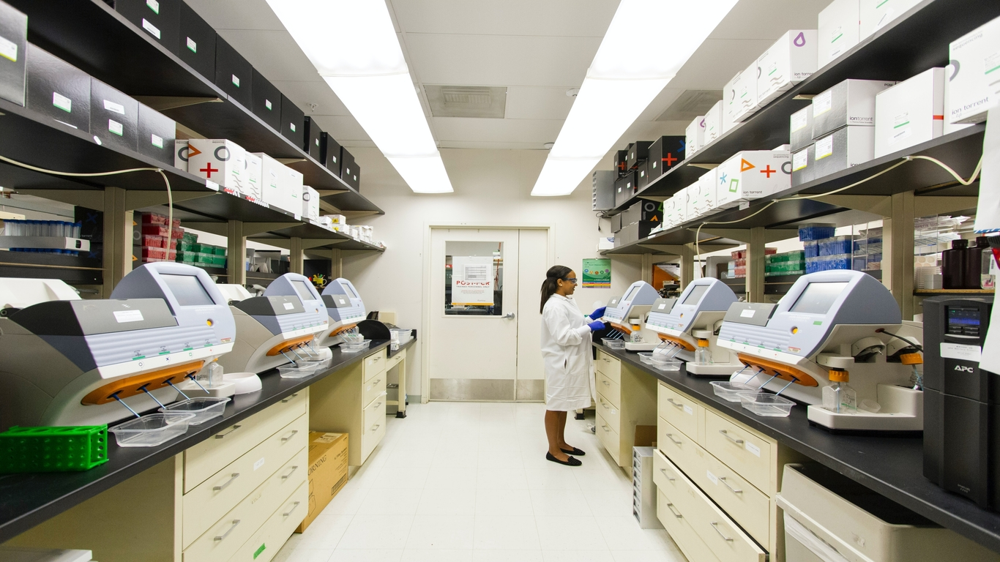

GI Clinical Recovery (April 2020 - Present)
Advisor: Dr. Amy Cohn
The COVID-19 pandemic led to dramatically reduced
capacity for many elective surgical and medical procedures
in order to minimize viral transmission in the healthcare
setting. We took the Discrete-Event Simulation (DES) approach
and built a c++ program to model results of various
combinations of 3 popular patient scheduling strategies
used in Gastroenterology (GI) clinics, which helps our clinical
collaborators assess the possible challenges to the policies.
...Read more.(to come)
surgical competency (Feb. 2020 - Present)
Advisor: Dr. Amy Cohn
Recent studies suggest that the current surgical
training programs are not reliably preparing residents
for independent surgical operations. We took the
Discrete-Event Simulation (DES) approach and built a
c++ program in which we assessed the impact of various
sources of variability, including each individual's
learning curve, transference of skills, and case volume,
on the training outcomes. This project indicates the
onset of the reformulation of surgical training programs.
...Read more.(to come)
Optimal Pricing (May 2020 - July 2020)
Advisor: Dr. Cong Shi
Pricing strategy is of paramount importance to revenue
management for companies especially for those having
multiple product lines to run. From earlier studies, we
know that a general revenue model (p*F(.)) is not
concave on its p-space but on q =1- F(.) space, which
takes complex steps from the original model to search
for an optimal pricing strategy for the products.
In this project we simulated the structure of the
revenue model in p-space with multinomial logit choice
model using Python and Matlab, and mathematically proved
that it has only one stationary point at which concavity
is secured.